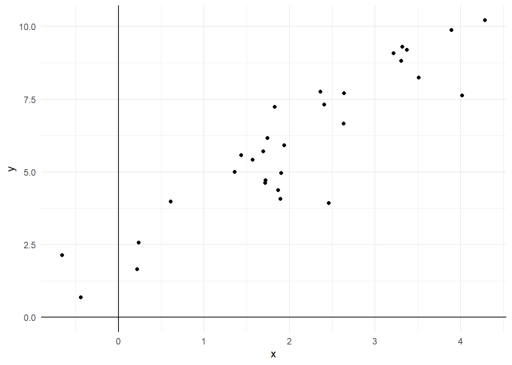
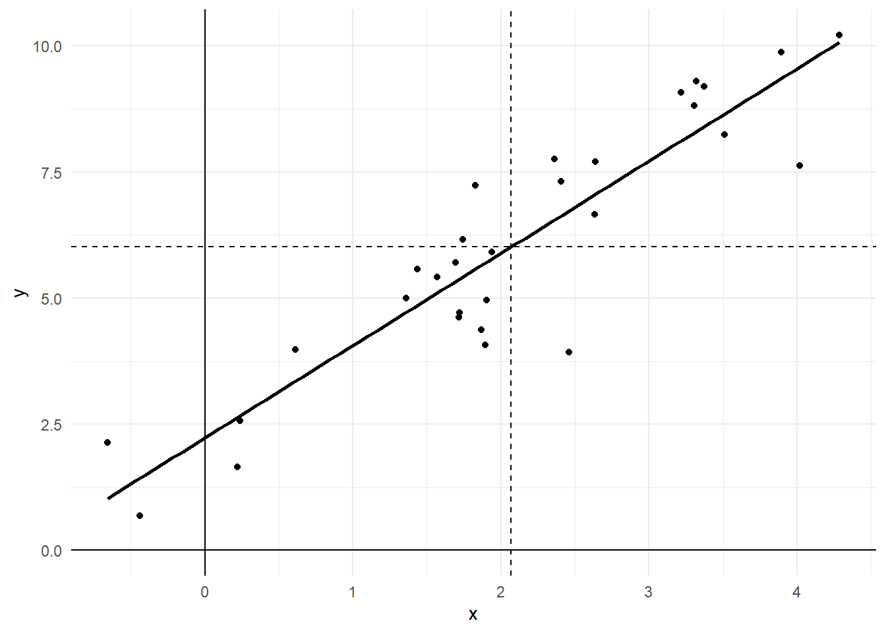

Joe Ornstein
This week, we discuss strategies for estimating causal effects when treatments are not randomly assigned. Our key concern here is confounders: variables that affect our outcomes and also influence whether our observations are treated or untreated. Unless we find some way to hold these confounders constant, any observed relationship between treatment and outcome might just be due to these other factors (e.g. eating ice cream doesn’t cause heatstroke; temperature is the confounding variable that causes both of those things to increase).
By the end of this week, you’ll be able to:
Identify which variables pose threats to causal inference in an observational study
Implement the difference-in-means estimator using the linear model
Fit multivariable linear models as a way to adjust for confounders
Explain the difference between internal and external validity
In this week’s problem set, we will practice some of the calculus skills we developed last week, and show how it connects to optimization problems in both statistics and formal theory. We’ll also practice working with multivariable linear models from the week’s reading.
\[ f(m) = (x_1-m)^2 + (x_2 - m)^2 + (x_3-m)^2 \]
\[ Y = 2X + 5Z + 4XZ + \varepsilon \]
For the next part of the problem set, load the corruption.csv dataset. This dataset contains country-level data on three variables collected in 2020. The first is a Corruption Perceptions Index (CPI) score. The second is GDP per capita PPP from the World Bank. The third is a Polity V score of regime type. See those links for additional information on how those variables are measured and interpreted.
I want to know if democracies are less corrupt on average than non-democracies. Let’s say that a country is a “democracy” if it has a Polity V score of 5 or greater. Use a linear model to estimate the difference-in-means between those two groups.
Are wealthy countries more or less corrupt on average? Use a linear model to describe this relationship and report the estimated slope. Should you log-transform the GDP per capita variable in this analysis? Why or why not?
Now estimate a multiple regression model using both democracy and GDP per capita. What happened to the estimated coefficient on democracy compared to what you found in problem 4? Interpret the result.
Bonus. Demonstrate that you can recover the exact same slope estimate that you got in problem 6 through the following three step process: (1) Fit a linear model predicting GDP per capita using the democracy variable. (2) Fit a linear model predicting corruption score using the democracy variable. (3) Fit a linear model predicting the residuals from (2) using the residuals from (1). Describe why you think this process yields the same estimate that you got from the approach in problem 6.
I want to show you this proof because I think it ties together a lot of different concepts that we’ve been learning, and helps you see what’s going on under-the-hood when you type lm() into R.
lm()
We have a dataset with one explanatory variable \(x\) and an outcome variable \(y\). Each observation is represented by a pair of values \(x_i\) and \(y_i\).

We want to find the values of \(\alpha\) and \(\beta\) that minimize the sum of squared errors, as given by the following function:
\[ f(\alpha, \beta) = \sum_{i=1}^n (y_i - \alpha - \beta x_i)^2 \]
Let’s start by minimizing the function with respect to the x-intercept, \(\alpha\). By the sum and chain rules, we get the following partial derivative
\[ \frac{\partial f}{\partial \alpha} = \sum_{i=1}^n -2(y_i-\alpha-\beta x_i) \]
Now we set that equal to zero and solve for \(\alpha\).
\[ \sum_{i=1}^n -2(y_i-\alpha-\beta x_i) = 0 \]
Divide each side by -2.
\[ \sum_{i=1}^n (y_i-\alpha-\beta x_i) = 0 \] Split up the sum into its component parts (this is the commutative property; doesn’t matter what order you add things).
\[ \sum_{i=1}^n y_i - \sum_{i=1}^n \alpha - \sum_{i=1}^n \beta x_i = 0 \]
When you add \(\alpha\) to itself \(n\) times you get \(\alpha n\), and we can factor a constant out of the last term on the left.1
\[ \sum_{i=1}^n y_i - \alpha n - \beta \sum_{i=1}^n x_i = 0 \]
Now here’s the key move of the proof: let’s divide each side by \(n\), recalling that sample means are defined as \(\frac{\sum y_i}{n} = \bar{y}\) and \(\frac{\sum x_i}{n} = \bar{x}\).
\[ \bar{y} - \alpha - \beta \bar{x} = 0 \] Add \(\alpha\) to each side.
\[ \alpha = \bar{y} - \beta \bar{x} \]
In other words, the value of \(\alpha\) that will minimize the sum of squared errors is to take the average value of \(y\) and subtract the average value of \(x\) times the slope. This makes sense geometrically. Here’s that earlier graph with the line of best fit and dotted lines denoting \(\bar{x}\) and \(\bar{y}\):

The line of best fit will cross through the point where \(\bar{x}\) and \(\bar{y}\) meet, so naturally the point where it crosses the y-axis will be \(\bar{y}\) minus how much the line increases or decreases between 0 and \(\bar{x}\). Now we just have to figure out the slope, \(\beta\).
Let’s start by taking the SSE function and substituting in the value of \(\alpha\) we just derived.
\[ f(\alpha, \beta) = \sum_{i=1}^n (y_i - \alpha - \beta x_i)^2 = \sum_{i=1}^n (y_i - (\bar{y} - \beta\bar{x}) - \beta x_i)^2 \]
Rearrange some terms inside those parentheses.
\[ f(\beta) = \sum_{i=1}^n ( (y_i - \bar{y}) - \beta (x_i - \bar{x}))^2 \]
Let’s use the same combination of sum rule and chain rule to find the derivative of this SSE function with respect to \(\beta\).
\[ \frac{df}{d\beta} = \sum_{i=1}^n -2(x_i - \bar{x})((y_i-\bar{y}) - \beta(x_i-\bar{x})) \]
Again, set that equal to zero and divide by -2.
\[ \sum_{i=1}^n (x_i - \bar{x})((y_i-\bar{y}) - \beta(x_i-\bar{x})) = 0 \]
Split up the sum into its component parts and factor out \(\beta\).
\[ \sum_{i=1}^n (x_i - \bar{x})(y_i-\bar{y}) - \beta \sum_{i=1}^n (x_i-\bar{x})^2 = 0 \] Solve for \(\beta\).
\[ \beta = \frac{\sum_{i=1}^n (x_i - \bar{x})(y_i-\bar{y})}{\sum_{i=1}^n (x_i-\bar{x})^2} \] Recall the definitions of variance (average squared distance from the mean) and covariance (average product of distance from the mean for two variables).
\[ Var(X) = \frac{\sum_{i=1}^n (x_i-\bar{x})^2}{n} \] and
\[ Cov(X,Y) = \frac{\sum_{i=1}^n (x_i - \bar{x})(y_i-\bar{y})}{n} \] Substituting those two definitions yields the final result:
\[ \beta = \frac{Cov(X,Y)}{Var(X)} \]
\(\beta x_1 + \beta x_2 + \beta x_3 + ... = \beta(x_1 + x_2 +x_3...)\)↩︎